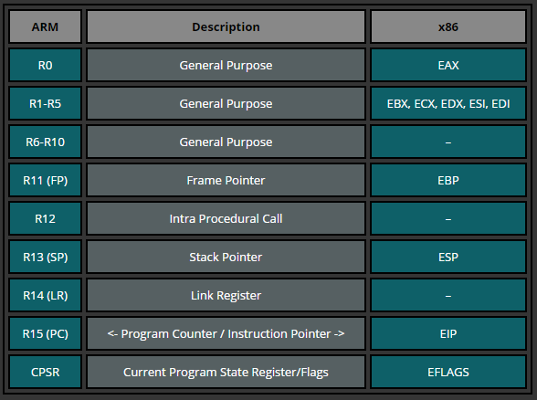
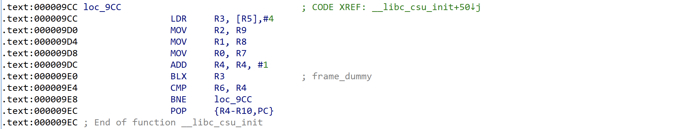
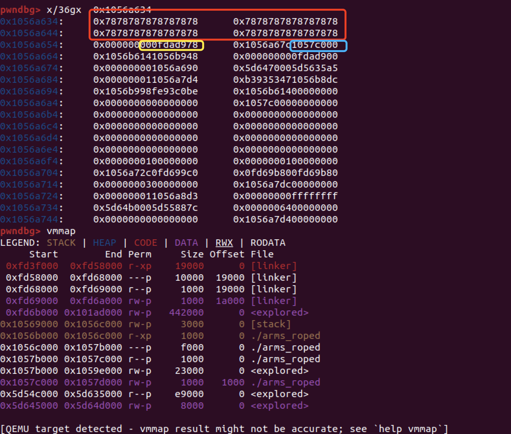
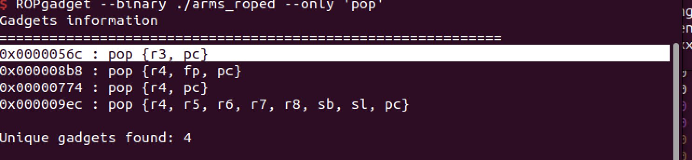
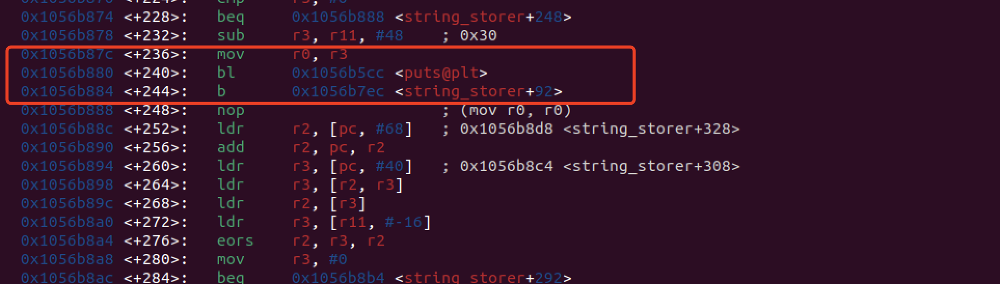

之前一直很想IoT 但是到多数案例，都是arm 结构下的，需要用到qemu来搭建环境。但是arm指令的学习和qemu 使用的各种毛病让我往而却步。不过，幸运的是，我在htb发现这个Arms_roped 这个有利于新手的docker环境（虽然还是有点过时），终于arm学习里踏入的第一步。
arm环境配置
这个题目很好，给了一个Dockerfile 直接docker build . 就可以搭建一个环境。不过这个环境是一个简单的arm pwn环境。我们只能简单的远程，并不随意打gdb 内存和寄存器的情况，这样对于我们是很不方便。同时，尝试在docker安装gdb插件无果，于是我们便考虑在本地搭一个类似环境用来gdb，再用pwntools来结合。
qemu安装与使用
qemu安装
安装qemu：
1 | sudo apt-get install qemu |
依赖库安装：
1 | sudo apt-get install -y gcc-arm-linux-gnueabi |
这样我们就安装好，qemu环境了。
我们用qemu-arm -L /usr/arm-linux-gnueabihf/ ./arms_roped 就可以在本地运行了。
这个步骤也是Dockerfile 记载的方法，不过docker安装是通过在https://github.com/qemu/qemu下载源码来编译的。
1 | RUN git clone https://github.com/qemu/qemu /qemu |
qemu的区别与注意
在刚才的安装中我们其实是安装 三个qemu 启动命令工具： qemu-user、qemu-user-static、qemu-system。
qemu-system 是用于模拟完整计算机系统的命令，qemu 在system mode 上模拟的命令。在system mode 可以模拟多种不同的处理器架构（如x86、ARM、PowerPC等）以及与之相关的外围设备。因此通过 qemu-system，你可以创建一个完整的虚拟机环境，包括模拟的处理器、内存、硬盘、网络接口，这样下整个文件系统一起模拟的，我们会得到一个相对真实的环境。
qemu-user/qemu-user-static 是用于用户空间应用程序的模拟执行的命令，即以QEMU user mode 允许在一个不同的体系结构上运行二进制可执行文件，而无需模拟整个计算机系统。QEMU user mode是system mode的精简版，只提供TCG层面的支持，他能运行guest Linux上的用户态程序，因此在某些细节还原度上是远远不如system mode ，比如：libc 段可能无法被正确vmmap 。qemu-user/qemu-user-static 两者的区别是qemu-user-static 是用于静态地模拟执行用户空间应用程序的命令，而``qemu-user`是动态模拟的，在程序开了‘PIE’和‘NX’保护下地址段地址会随机变化。。
而在本题环境中，dockerfile 给出的是 user mode 的qemu-user来执行命令。
即：qemu-arm -L /usr/arm-linux-gnueabi ./arms_roped
若我们想gdb 调试 则 用 -g 来开放我们链接的端口。例如：
qemu-arm -g 1234 -L /usr/arm-linux-gnueabi ./arms_roped
如何gdb qemu程序
若我们想gdb 我们用qemu 启用的程序，我们还需要通过如下命令安装gdb-multiarch。
1 | sudo apt-get install gdb-multiarch |
gdb-multiarch 是 GNU 调试器（GDB）的一个变体，它允许在多种体系结构（如x86、ARM、PowerPC等）上进行调试。通常情况下，gdb 只能调试与宿主系统相同体系结构的程序，但是 gdb-multiarch 可以通过“set architecture xxx”修改以支持跨体系结构的调试。比如 “set architecture arm” 修改为arm体系调试。
关于gdb-multiarch 我们使用如下：
1 | gdb-multiarch ./arms_roped |
gdb-multiarch ./arms_roped 打开gdb-multiarch并加载读取arms_roped文件的symbols标识符同时讲调试模式设置为arm。（相当于执行file ./arm_roped 与set architecture arm” ）
set solib-search-path将要读取要用到libc文件夹路径设置为我们所设置的文件夹路径。这样gdb中遇到与环境相应的通过链接库，gdb会自动读取相应的symbols标识
target remote。远程gdb 所暴露的IP和端口。
如何用pwntools交互
pwntools模块的process读取所一个命令所产生的进程。我们可以通过下面方式启动，进而发送命令。
1 | from pwn import * |
遗憾的是对于gdb模块展示不能接受到qemu 暴露的调试端口，只能另起窗口调试。
arm 汇编入门知识点小提
x64汇编与arm汇编在一些地方还是神似的地方。比如在寄存器上：

eax 在 arm中变成r0，r1-r5对应 edx、ecx，edx，esi，edi。r11（FP）对应edp，edp 对应arm中 r13（SP），而EIP对应R15（PC）。在arm中gadget 以pc来跳转，x64 以ret来跳转。同时，x64中常用的万能gadget也继续存在。

但arm汇编的具体细节又不一样，这里找到一个不错的入门教程说明：
解题思路
当我们arm环境和知识储备完后，回到这个题。
1 | Arch: arm-32-little |
题目开了 PIE 、NX 和canary 。
但题目问题点在string_storer函数，我们在用 memcpy 复制时，没有对dest里的值进行清空，也没有对复制的进行长度限制。
1 | int string_storer() |
如下下图所示，红色部分就是我们输入，黄色就是canary值，蓝色就是返回地址（elf上一直值）。这导致我们可以泄漏出之前，就留存道dest里elf地址及canary值。

这时，与x86情况类似，我们得到canary 就可以随意利用elf里的gadgets栈溢出了。于此同时，我发现两有意思的gadgets：


这俩gadgets结合起来就可以泄露出libc地址，来执行execve(“/bin/sh”,0,0)了。
exp：
1 | #!/usr/bin/env pythonq |
参考文献
https://www.jianshu.com/p/a7e2da50263e
https://x1ng.top/2020/11/16/arm-pwn%E5%85%A5%E9%97%A8%E4%B9%8B%E8%B7%AF/